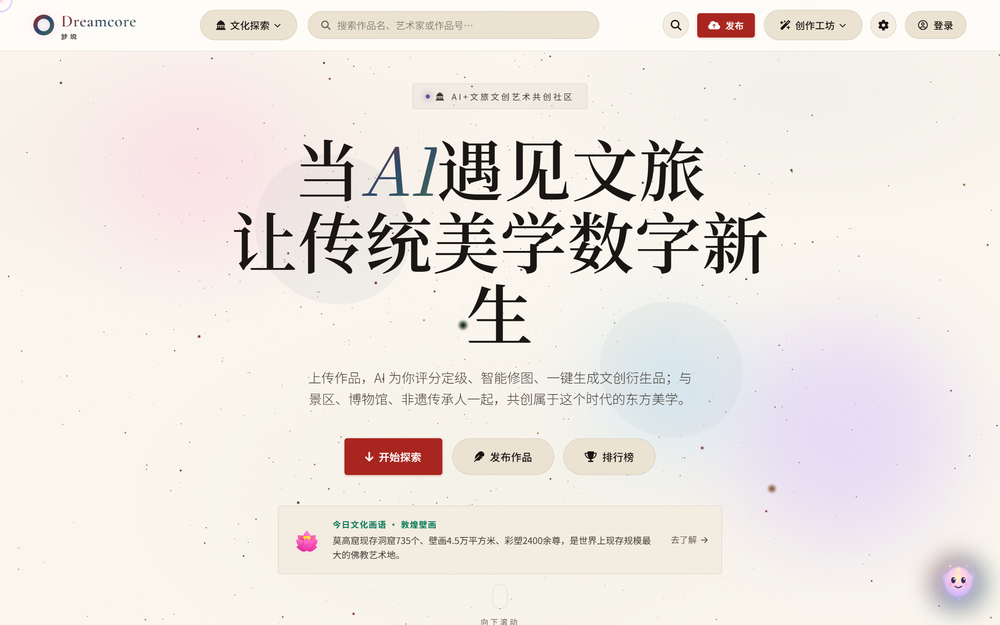
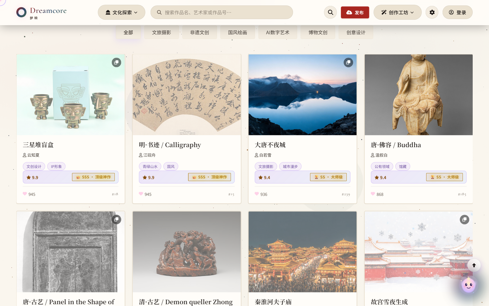
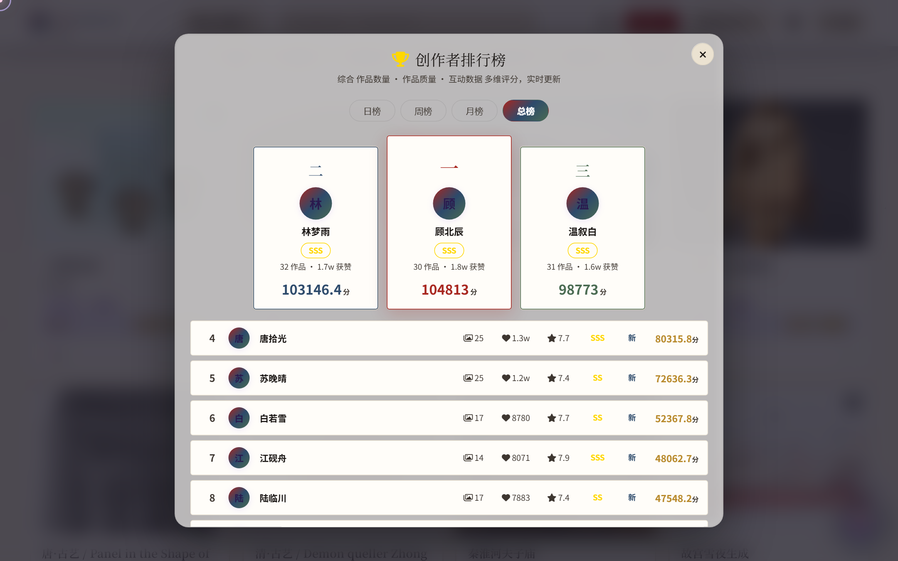
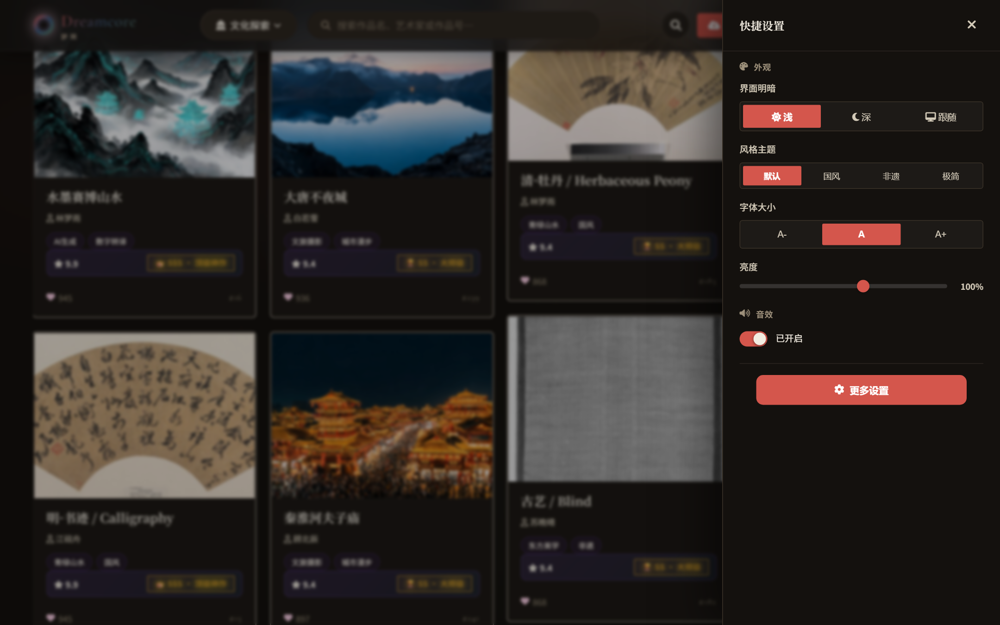
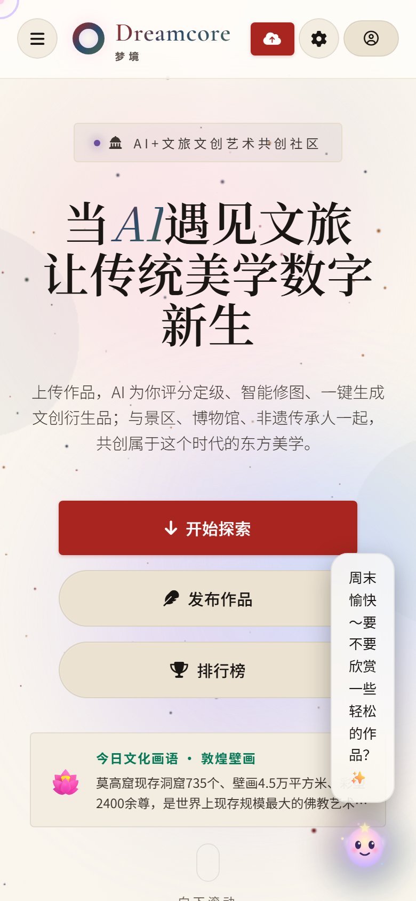
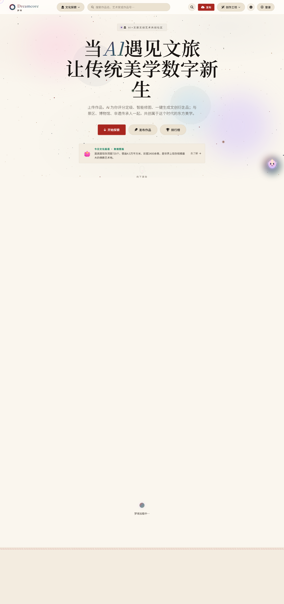
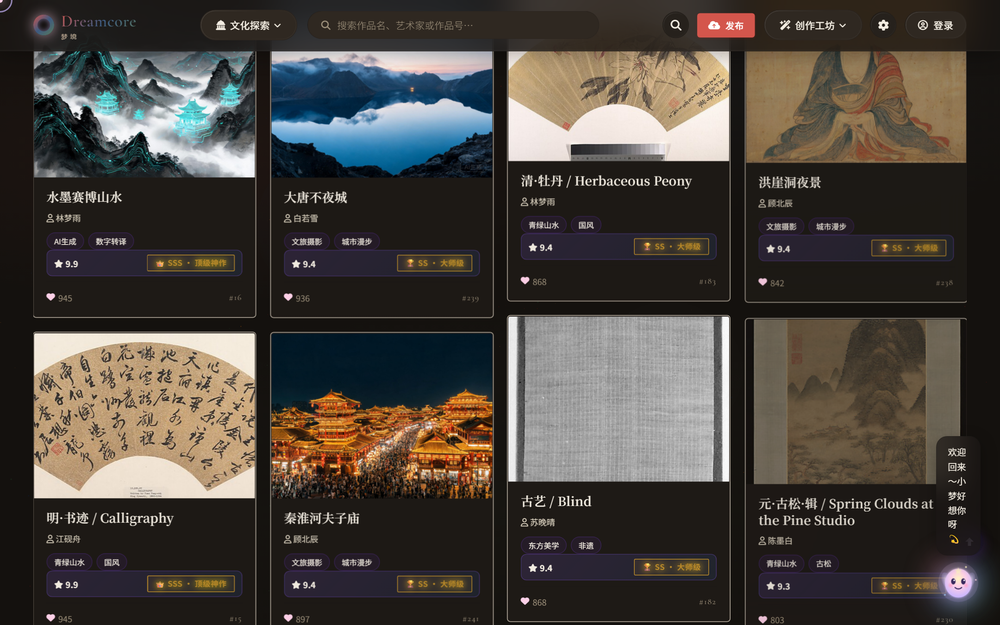

总体判断：主题迁移已完成「表层令牌」，但未完成「体系收口」。宣纸底、朱砂主色、宋体标题、4px 圆角、慢出动效等核心令牌已生效且质量达标；但「风格主题·默认」档仍是旧紫调世界，金色徽章体系、粒子配色、Hero 光斑、小梦挂件四处残留旧身份，形成「一纸宣墨、半窗紫梦」的割裂感。另有两处排版级缺陷（Hero 孤字断行、移动端气泡溢出）需要优先修复。
| 评估维度 | 得分 / 10 | 一句话结论 |
|---|---|---|
| UI 风格主题 | 7.0 | 令牌层已东方化，但默认风格档与粒子系统仍输出紫粉调，新旧并存 |
| 视觉表现 | 7.5 | 纸纹肌理与回纹装饰到位；Hero 光斑配色、emoji 图标拉低完成度 |
| 色彩体系 | 7.0 | 主链路（底/字/主按钮）达标 AAA；金色徽章、紫色光斑游离于体系外 |
| 字体层级 | 7.5 | 宋黑双层结构正确；但 96px 大标题孤字断行是排版事故，字阶偏粗放 |
| 组件样式 | 7.5 | 卡片/导航/抽屉纸感统一；徽章体系金紫混杂，滑块轨道无填充 |
| 布局结构 | 8.0 | 栅格清晰、移动端无横向溢出；内容显现强依赖滚动动画是结构性风险 |
| 交互体验 | 8.0 | 三态主题/字号/亮度控制完备；动效曲线统一，小梦挂件负体验 |
以下 7 张截图均于 2026-10-15 从 DEV 环境（http://localhost:5173）实拍，原始文件存于 docs/ui-audit/，量化数据存于 docs/ui-audit/metrics.json。







现状：表层令牌（--bg-dark:#faf6ee 宣纸 / --accent:#a8261f 朱砂 / --radius:4px / --lg-blur:10px）已按「墨韵丹青」落地，深浅双主题完整。根因级问题：页面存在风格主题机制 [data-style="guofeng"|"feiyi"|"minimal"]（style.css L6387-6454），而默认档（无 data-style）仍保留旧紫调令牌（--dream-gold:#fff4c2 等）；粒子系统第三主题回退色为紫色系 [0x8e44ad, 0x9b59b6, 0x3498db, 0x1abc9c]（particles.js L66）——「默认」与「国风」两档视觉语言分裂，首访用户看到的是紫调。
行业标准：主流文旅文创站（故宫文创、敦煌研究院、苏州博物馆、三星堆文创）均做到「主题即身份」——矿物色取自馆藏文物、无第二套并行色彩语言、氛围层（粒子/光斑/纹理）与主题色严格同源。
已达：SVG feTurbulence 宣纸肌理（2.5% 噪点）、页脚回纹分隔带、区块标题回纹、卡片 hover 角花、Modal 缠枝渐变边——装饰语言有明确的东方语法。差距：① Hero 粉紫光斑破坏纸墨氛围（图1）；② emoji 直接充当 UI 图标（🏆 奖杯、🏅 勋章、🌸 莲花、🥇🥈🥉 以 font-size:0 隐匿但仍残留 DOM）；③ 「小梦」挂件为粉紫二次元贴纸风，与全站气质断层。行业做法是以线性图标 + 印章/题跋元素承载功能图标，装饰密度遵循「疏可走马、密不透风」。
已达（实测计算样式）：浅色正文对比度 15.9:1（#1a1614 / #faf6ee，WCAG AAA），次级文本 10.4:1，朱砂按钮白字 7.4:1；深色正文 14.2:1——主链路全部达标。游离色：① 评级徽章 --grade-color 默认 #fbbf24（style.css L6160-6162）+ #ffd700 硬编码（L6485）；② 紫粒子与紫光斑；③ 全站统计 333 处硬编码十六进制色散布于 style.css，仅 20 处 !important（克制 ✓），但新令牌覆盖率不足五成。行业标准是「一色一职」：色彩取自矿物颜料（朱砂/黛青/石绿/赭石/缃金），每色绑定明确语义。
已达：宋黑双层结构正确——H1/H2 用 Noto Serif SC（600），正文 Noto Sans SC，数字西文 Cormorant Garamond，符合「标题衬线、正文无衬线」的文博排版惯例。事故：H1 96px 在 1440px 视口断行为「当AI遇见文旅 / 让传统美学数字新 / 生」——末行孤字（图1），属排版硬伤；粗放：h2 52px 偏大挤压版心，中间字阶（h3/lead/caption）缺乏规范刻度；风险：字体经 fonts.loli.net CDN 加载（index.html L140-143），离线演示（竞赛场景常态）会整体回退系统字体，气质漂移。行业标准提供 5-6 级固定字阶 + clamp() 流式缩放 + 关键标题 text-wrap:balance 防孤字。
已达：卡片纸感 1px 边 + 4px 圆角统一，导航毛玻璃克制（blur 8px），设置抽屉控件齐整。差距：① 徽章体系三套语言并存（黑章评分/鎏金评级/彩色标签）未收敛为「印章」隐喻；② 亮度滑轨无填充进度；③ 排行榜选中态用墨绿胶囊而非主题色；④ 徽章内 emoji 与文字混排。行业范式：评级用方印章（朱砂底白字「神」/赭石「妙」/黛青「逸」），一眼可读且自带文化叙事。
已达：12imgs/12cards 首页信息密度合理；移动端 390px 无横向溢出（实测 scrollWidth=clientWidth=390）；页脚回纹带完整。结构性风险：① 内容显现强依赖滚动动画（图2 全页空白实证）——违背渐进增强；② Hero 占首屏 100% 高度后「今日文化话语」折叠在 900px 视口外，首屏信息效率偏低；③ 间距体系未见 8pt 基准刻度。行业范式：核心内容 CSS 直出、动画仅作增强（prefers-reduced-motion 与无 JS 均可读），首屏即见「内容钩子」。
已达：动效曲线统一 cubic-bezier(.22,.61,.36,1) 慢出落笔感（实测按钮 transition ✓）；三态主题（含「视频」观影模式）是同类站点少见的贴心功能；字号/亮度即时生效。负体验：① 小梦挂件移动端遮挡+裁切（图7）；② 排行榜以弹层呈现打断浏览动线（图4 背景），返回需额外交互；③ hover 才显现的角花缺少静态 rewarded 细节。行业范式：数字人/吉祥物挂件在移动端默认收合为头像点，点击展开；榜单用页面承载并用锚点直达。
共 13 项：P0 排版/遮挡级 2 项，P1 体系级 6 项，P2 打磨级 5 项。每项均附可复现证据。
| 级别 | # | 维度 | 问题描述（量化证据） | 证据位置 |
|---|---|---|---|---|
| P0 | Q-01 | 字体层级 | H1 96px 断行孤字「生」：1440px 视口下三行断行，末行仅 1 字；标题文案 16 字无标点无断点控制 | 图1/图2；metrics.json h1.fontSize=96px |
| P0 | Q-02 | 交互体验 | 移动端小梦气泡溢出+遮挡：气泡文本右缘垂直裁切，遮挡「今日文化话语」卡片正文 | 图7；390×844 实拍 |
| P1 | Q-03 | UI 风格 | 默认风格档仍为旧紫调：粒子第三主题回退色 [0x8e44ad,0x9b59b6,…] 紫系；默认档令牌 --dream-gold:#fff4c2 等未迁移；Hero 粉紫光斑与之同源 | particles.js L66；style.css L12/6394；图1 |
| P1 | Q-04 | 色彩体系 | 金色徽章未迁入东方色：--grade-color 默认 #fbbf24、.lb-title i 硬编码 #ffd700；画廊 SSS/SS 徽章 + 排行榜分数/奖杯均金黄 | style.css L6145-6162/L6485；图3/图4 |
| P1 | Q-05 | 布局结构 | 内容显现强依赖滚动动画：未滚动时文档 3061px 中 Hero 以下不可见（fullPage 截图空白），违背渐进增强，影响爬虫/打印/无 JS 场景 | 图2 实证 |
| P1 | Q-06 | 视觉表现 | emoji 充当功能图标：🏆 奖杯、🏅 勋章、🌸 莲花、隐藏态 🥇🥈🥉（font-size:0 残留 DOM，读屏软件仍会朗读「银牌」造成噪音） | 图3/图4；metrics.json medalText 含 🥈 |
| P1 | Q-07 | 字体层级 | 字体依赖外部 CDN：fonts.loli.net 加载 4 族字体，离线演示回退系统字体，气质漂移（竞赛评审常见离线环境） | index.html L140-143 |
| P1 | Q-08 | UI 风格 | 小梦挂件粉紫二次元风与墨韵主题断层（深色下更甚） | 图5/图7 |
| P2 | Q-09 | 色彩体系 | 令牌缺口：--accent-hover 与 --font-serif 值为空，hover 态与衬线字族未令牌化 | metrics.json vars |
| P2 | Q-10 | 组件样式 | 亮度滑轨无填充进度色，数值 100% 与轨道视觉不对应（范围 50-150 时 100 居中，但无刻度无填充难以理解） | 图6 |
| P2 | Q-11 | 组件样式 | 排行榜「总榜」选中态为墨绿胶囊，游离于朱砂/靛青/石绿体系之外 | 图4 |
| P2 | Q-12 | 布局结构 | 深色卡片边框沿用 rgba(26,22,20,.08)（近黑），暗底上不可见，卡片分隔仅靠底色差 | metrics.json dark.card.border |
| P2 | Q-13 | 交互体验 | 占位链接 a[href="#"] 残留 1 处；全站 333 处硬编码色仅少部分收口进令牌 | metrics.json counts；style.css 全文 |
对标国内文旅文创数字产品的五个代表：故宫文创（商业衍生标杆）、每日故宫（数字器物美学）、敦煌「数字敦煌」（壁画色体系）、苏州博物馆官网（水墨极简）、三星堆文创（考古神秘感）。五个维度 10 分制评分。
| 维度 | Dreamcore | 行业均值 | 差距根源 |
|---|---|---|---|
| 色彩文化性 | 7.0 | 9.0 | 主色已矿物化 ✓，但金色/紫色双残留（Q-03/Q-04），色彩「同源性」断裂——行业做法是全部色值可溯源到具体文物/壁画取色 |
| 字体气质 | 7.5 | 8.6 | 宋黑双层正确 ✓，缺孤字控制与字阶刻度（Q-01），缺竖排/题跋等仪式性排法 |
| 纹样与装饰语言 | 7.0 | 8.8 | 回纹/角花/缠枝已有 ✓，但 emoji 混入（Q-06）、纹样密度过低、缺少印章/篆刻锚点元素 |
| 布局留白 | 7.5 | 8.7 | 网格清晰 ✓，但首屏信息效率低、滚动显现依赖（Q-05）、8pt 间距体系未建立 |
| 文化叙事与仪式感 | 7.0 | 9.2 | 「今日文化话语」是好的叙事锚点 ✓，但评级/徽章/数字人未参与叙事——行业让每个组件都讲文化（印章、器物卡、卷轴展开） |
以上问题的逐项解决方案、涉及文件路径与验收标准，见配套文档 《UI 布局优化实施方案》（本报告的第二阶段产出）。